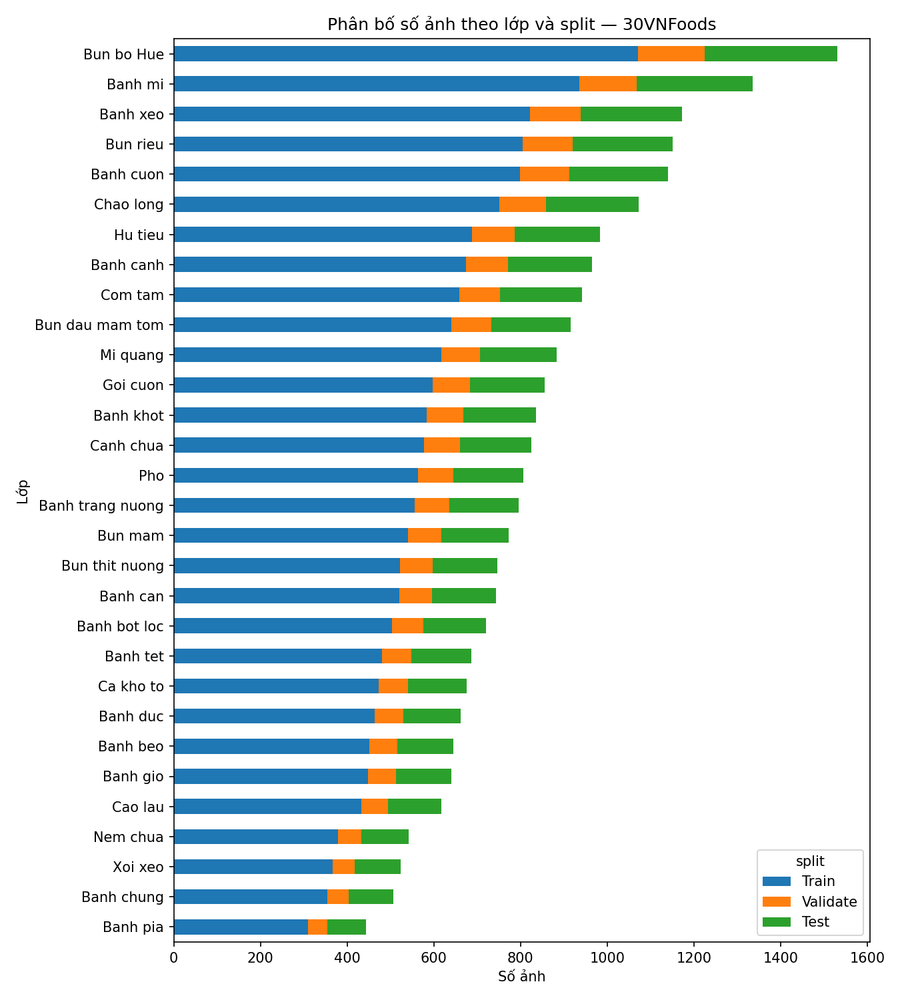
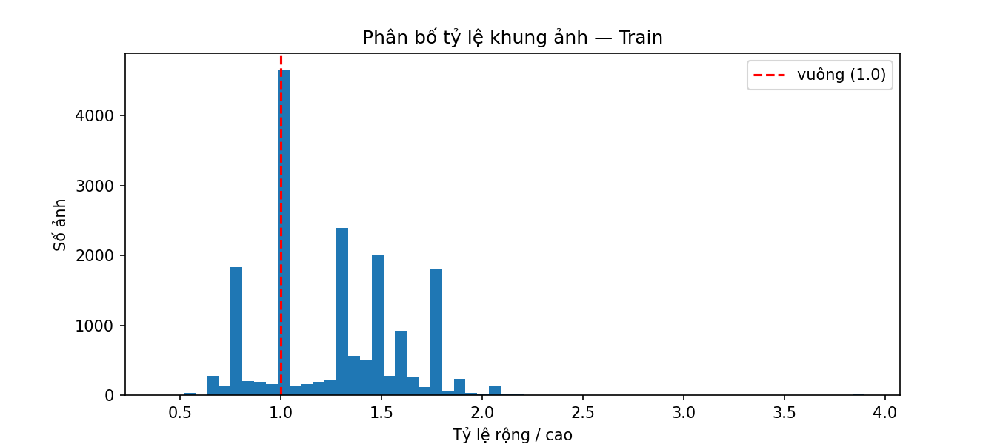
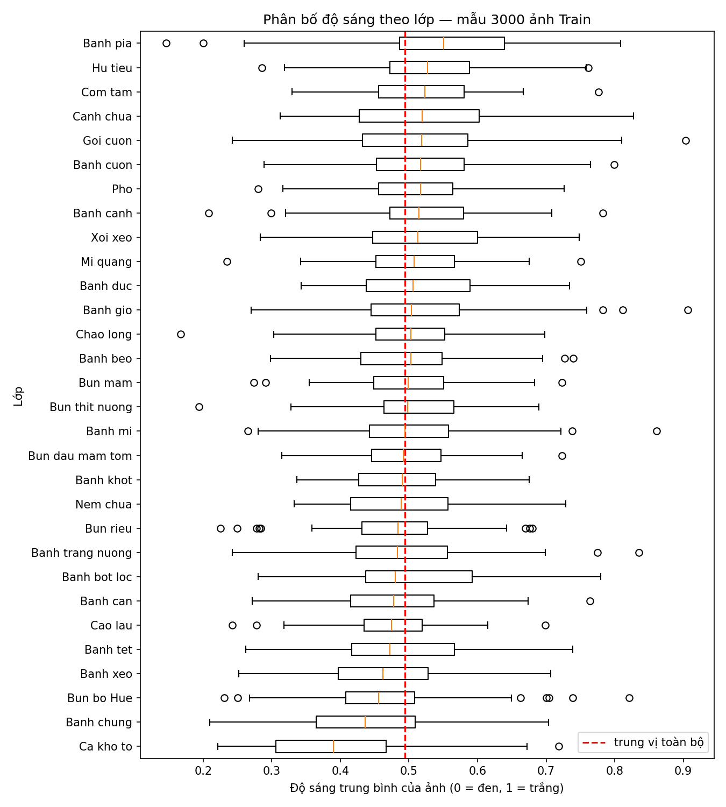
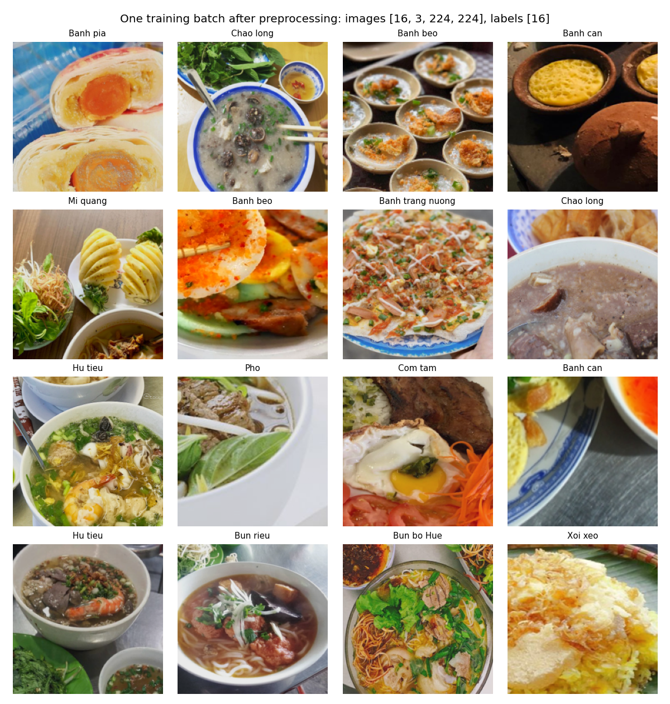
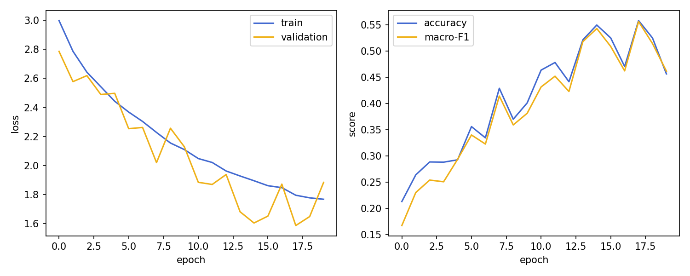
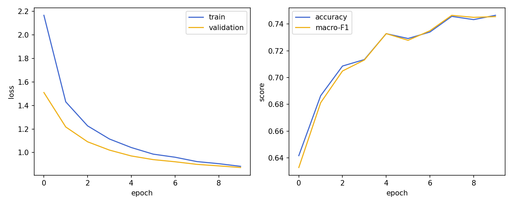
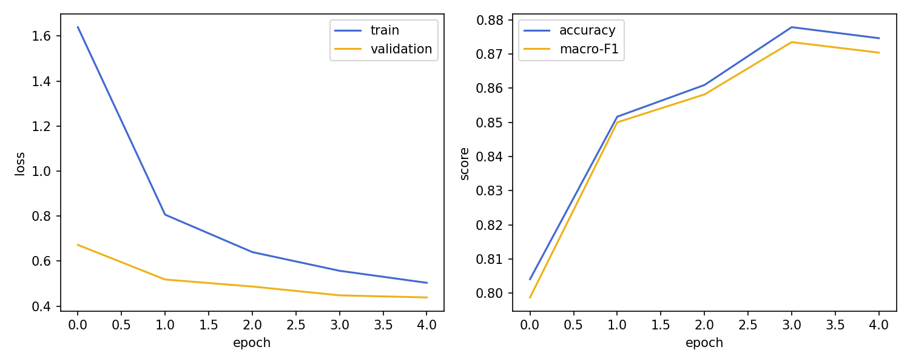

At a glance
Assignment
- Title
- Deep Learning on Large-Scale Data and Specialized Tasks
- Instructor
- Lê Thành Sách
- Group
- NNs
- Members
- Nguyễn Nhật Nam (2352778), Hồ Hồng Phúc Nguyên (2352824), Phan Quốc Đại Sơn (2353053)
- Task track
- Image classification (30 classes)
- Dataset
- 30VNFoods · 24,629 images after cleaning
Milestones
- M1 Proposal
- 07 Oct 2026 · 15% of A2 · Submitted; revision 2 on 28 Oct
- M2 Draft
- 28 Oct 2026 · 25% of A2 · This page
- M3 Final
- 11 Nov 2026 · 60% of A2 · Not started
Links
| Item | Link | Status |
|---|---|---|
| Dataset proposal | reports/a2/proposal.md | Revision 2 · approval pending |
| EDA notebook | notebooks/a2_eda.ipynb | Done |
| Source code | src/a2/ · configs/a2.yaml | In progress |
| Checkpoints (or reconstruction instructions) | README — Assignment 2 (reconstruction commands) | Reconstruction only |
| Report | [PDF URL] | TODO (M3) |
| Slides | [slides URL] | TODO (M3) |
| YouTube presentation | [video URL – title: CO3133-Semester-261 – Group NNs – Assignment 2] | TODO (M3) |
Dataset proposal and approval
Approval status: Submitted 07 Oct 2026; revision 2 on 28 Oct 2026 — decision not yet recorded
Revision 2 keeps the dataset, task, metrics and models. It replaces the split and leakage numbers with those of the
final EDA. Full text: reports/a2/proposal.md.
| Proposal field | Content |
|---|---|
| Dataset name, source, version, license | 30VNFoods — Kaggle quandang/vietnamese-foods, version 11 (pinned); MIT license |
| Task, input, output definitions | 30-class single-label image classification; input: RGB image, 3×224×224 after preprocessing; output: 30 class logits |
| Number of samples and annotation types | 25,136 images, one class label per image (folder name); official split Train 17,581 / Validate 2,515 / Test 5,040 |
| Preliminary distribution analysis | Train per class: 310–1,071 (imbalance 3.45×); median image 1000×720 px; 222 near-duplicate clusters span two splits, 56 carry two labels |
| Data-splitting plan | Official stratified split minus duplicates: Train 17,164 / Validate 2,481 / Test 4,984 (results/a2/splits/split_v2.json) |
| Split unit preventing leakage | Near-duplicate cluster: pHash distance ≤ 6, or ≤ 8 within one class; a cluster stays in one split |
| Evaluation metrics | Accuracy and macro-F1 (primary); per-class F1, confusion matrix; checkpoint = best validation macro-F1 |
| Baseline plan | A1 CNN widened to 4 blocks with global average pooling, trained from scratch (397 k parameters) |
| Planned pretrained models | ResNet-50 (ImageNet); controlled experiment: frozen backbone vs. full fine-tuning |
| Compute estimate | ≈ 11.4 GPU-hours on an RTX 4060 Laptop GPU (8 GB), including a 30% margin; peak memory 3.1 GB (benchmark of 07 Oct 2026) |
| Subset selection rules (if any) | Full dataset; remove 507 images (2.0%): 118 label conflicts, 196 cross-split and 193 within-split duplicates (results/a2/tables/a2_drop_list.csv) |
Problem statement
Given one photo of a Vietnamese dish, predict which of 30 dishes it shows. Such a classifier is the first step of food-logging, menu-search and tourism apps. Input: one RGB photo of any size. Output: one of 30 labels. The prediction unit is the image. We train with cross-entropy on the logits f(x) ∈ ℝ30 and predict ŷ = argmax f(x).
Main difficulties:
- Fine-grained classes. Several dishes share ingredients and differ only in shape or broth: Banh chung (square) vs. Banh tet (round); Bun bo Hue vs. Bun rieu vs. Banh canh.
- Web-crawled photos. Sizes, framing and backgrounds vary widely, and duplicates and wrong labels occur.
- Moderate imbalance (3.4× between the largest and smallest class).
Research question
How much does ImageNet pretraining help over a small CNN trained from scratch on about 17 k food photos? Within fine-tuning, does updating the whole backbone beat training only a new head, and is the gain worth its compute cost?
Dataset description and EDA
30VNFoods (Kaggle,
version 11, MIT license; paper) has 25,136
JPEG photos of 30 dishes, crawled from the web, with one label per image given by its folder. The download is
4.3 GB. The source URL of each image is listed in Urls/, so copyright of each photo stays with its
source. All 25,136 files decode and are RGB.
EDA notebook: notebooks/a2_eda.ipynb. It runs end-to-end on the local copy and writes every figure
and table below.
Class distribution and imbalance

- Train per class: from 310 (Banh pia) to 1,071 (Bun bo Hue), mean 586; imbalance 3.45×. The counts fall off gradually and no class is rare, so we report macro-F1 and per-class F1. We keep plain cross-entropy for now; weighted cross-entropy is a candidate ablation.
- Smallest class after cleaning: 306 train / 44 validation / 89 test images.
Input size and aspect ratio

- Median size 1000×720 px (min 100×83, max 7360×5184). 24.6% are exactly square.
- 1.4% (251) have a short side below 224 px. They are spread over all classes (at most 2.8%, Canh chua), so we keep them.
- 1.1% (193) have an extreme aspect ratio (> 2 or < 0.5). They are real dish photos, but a centre crop can cut off the dish. We keep them and will check whether they fail more often (hypothesis H3 below).
Colour and brightness

- Train v2 mean RGB [0.582, 0.514, 0.400] and std [0.269, 0.265, 0.293]. The images are warmer and brighter than ImageNet (mean [0.485, 0.456, 0.406]).
- Class medians lie between 0.41 and 0.57 and the boxes overlap, so brightness alone does not separate dishes. Banh pia is the brightest class, because many of its photos show packaging on white backgrounds. This is a possible shortcut (H4).
Duplicates and label noise
- Exact copies (MD5): 63 groups covering 129 images. 40 groups span two splits; 38 carry different labels.
- Near duplicates (pHash, 64-bit): 427 clusters of ≥ 2 images. 222 span two splits; 56 carry different labels. pHash catches 402 of the 507 removed images; MD5 alone would miss them.
- The label conflicts concentrate on the pairs we expect to confuse: Bun bo Hue / Bun rieu, Banh chung / Banh tet, Banh duc / Banh gio, Banh can / Banh khot. One is a clear error: a goi cuon photo labelled Banh mi.
Splitting and preprocessing
Split unit: near-duplicate cluster · Seed: none needed for the split (it is deterministic); seed 42 for training · Stratification: the official split is already stratified (≈ 70/10/20 per class) · Subset rules: remove 507 images, nothing else.
| Split | Official | After cleaning (v2) | Removed |
|---|---|---|---|
| Train | 17,581 | 17,164 | 417 |
| Validate | 2,515 | 2,481 | 34 |
| Test | 5,040 | 4,984 | 56 |
| Total | 25,136 | 24,629 | 507 |
- Leakage rule. Two images are linked when their pHash distance is ≤ 6, or ≤ 8 within one class. We picked the threshold by inspecting pairs at distances 2, 4, 6 and 8. At distance 8 the number of cross-label pairs jumps to 18, mostly false matches. The largest cluster has 3 images, so there is no chaining.
- Cleaning rules: drop every cluster with two labels (118 images); for a cluster across
splits, keep one copy in the priority order Test > Validate > Train (196 removed); for a cluster inside
one split, keep one copy (193 removed). Each removed image, its reason and the copy kept are listed in
results/a2/tables/a2_drop_list.csv. - Training transforms:
RandomResizedCrop(224, scale=(0.08, 1)), horizontal flip,ColorJitter(0.1, 0.1, 0.1). Evaluation:Resize(256)+CenterCrop(224). JPEGs are decoded at reduced size (PILdraft, ≥ 320 px) to speed up loading. - Normalisation: the CNN uses Train v2 statistics; ResNet-50 uses ImageNet statistics, which its pretrained weights expect.
- Tensor shapes: images
[B, 3, 224, 224]float32, labels[B]int64 in 0–29.

python -m src.a2.data.Methodology
Pipeline overview
30VNFoods JPEGs + split_v2.json -> decode (PIL draft) -> augment / resize-crop -> normalise
-> DataLoader (batch 64, 6 workers) -> model -> 30 logits -> cross-entropy
-> Adam -> argmax -> accuracy, macro-F1 on validation -> keep best checkpointThe images (4.3 GB, median 1000×720 px) do not fit in memory, unlike Fashion-MNIST in A1. They are read
from disk by six worker processes. Each worker decodes a JPEG straight to about 320 px using PIL draft mode
before cropping, which keeps the GPU fed. The training loop is the A1 trainer (src/engine/trainer.py),
reused unchanged. All A2 code is in src/a2/, so the A1 results stay reproducible.
Models
| Role | Model | Input representation / loss | Self-implemented vs. library | Params | Status |
|---|---|---|---|---|---|
| Simple baseline | CNN: 4 × (Conv3×3-BN-ReLU-MaxPool), channels 32-64-128-256, global average pooling, dropout 0.3, linear head | RGB 224×224, Train v2 normalisation / cross-entropy | Self-implemented (extends the A1 CNN); PyTorch layers | 397,086 | Trained (draft, 20 epochs) |
| Pretrained model | ResNet-50, torchvision IMAGENET1K_V2, 1000-way head replaced by a 30-way linear head | RGB 224×224, ImageNet normalisation / cross-entropy | Library backbone (torchvision); head, freezing and training loop ours | 23,569,502 (61,470 trainable when frozen) | In progress (draft runs: frozen and full) |
Why the A1 CNN had to change: at 224 px, the A1 design (2 blocks + flatten) would put about 6 M parameters into the linear head (56×56×64×30), and each output would see only about a 10 px patch. Four blocks and global average pooling give a larger receptive field and a 7.7 k-parameter head.
Fine-tuning procedure
- Frozen (
resnet50_frozen): every backbone parameter hasrequires_grad = False, and the backbone stays in eval mode so BatchNorm keeps its ImageNet statistics. Only the new head (61,470 parameters) is trained, with Adam at lr 1e-3. - Full (
resnet50_full): all layers are trained with Adam at lr 1e-4 (10× lower, to avoid destroying the pretrained features); batch 32 to fit in 8 GB without mixed precision. - Both use 224 px input, the same augmentation, weight decay 1e-4, early stopping on validation macro-F1 (patience 5). Weights are downloaded by torchvision on first use.
Experimental setup
- Optimizer / LR / scheduler
- Adam, weight decay 1e-4; lr 1e-3 (CNN, frozen ResNet), 1e-4 (full fine-tuning); no scheduler in the draft
- Batch size / epochs
- 64 (32 for full fine-tuning); draft runs use fewer epochs than planned (see results)
- Regularization / early stopping
- Augmentation, dropout 0.3 (CNN), weight decay; early stopping with patience 5 on validation macro-F1
- Checkpoint criterion
- Highest validation macro-F1
- Seeds / number of runs
- Seed 42, one run per configuration in the draft; 3 seeds planned for M3
- Hardware
- NVIDIA GeForce RTX 4060 Laptop GPU (8 GB), AMD Ryzen 7 7735HS, Windows 11
- Software versions
- Python 3.10.21, PyTorch 2.14.1+cu126, torchvision 0.29.1+cu126, CUDA 12.6
- Mixed precision
- No (draft); planned for M3
Controlled experiment (mandatory)
| Hypothesis | Changed factor | Fixed factors | Metrics | Decision criterion |
|---|---|---|---|---|
| Full fine-tuning beats a frozen backbone on 30VNFoods, because these photos differ from ImageNet in colour and content | Freeze vs. full fine-tune (with the learning rate that goes with each) | Data, split v2, augmentation, input size, epochs budget, seeds, metric | Validation/test macro-F1 and accuracy; training time and memory | The difference counts only if it exceeds the spread over 3 seeds; the gain is weighed against the extra GPU time |
TODO (M3) Run both arms with 3 seeds.
Results (preliminary)
Quantitative results
Validation set (2,481 images), seed 42, one run per configuration, best checkpoint by validation macro-F1. These are draft runs: fewer epochs than planned, no learning-rate schedule, no mixed precision.
| Model / config | Val macro-F1 | Val accuracy | Params (trainable) | Epochs run (best) | Training time | Run ID |
|---|---|---|---|---|---|---|
| CNN baseline (from scratch) | 0.556 | 0.558 | 397,086 (all) | 20 (18) | 20.9 min | a2_cnn_s42_1028-1546 |
| ResNet-50, frozen backbone | 0.746 | 0.746 | 23,569,502 (61,470) | 10 (8) | 11.1 min | a2_resnet50_frozen_s42_1028-1607 |
| ResNet-50, full fine-tuning | 0.874 | 0.878 | 23,569,502 (all) | 5 (4) | 10.5 min | a2_resnet50_full_s42_1028-1619 |
TODO (M3) Test-set metrics, per-class F1, confusion matrix, inference cost, 3 seeds.
Training behaviour



- CNN: underfitting, not yet converged. Training loss is still falling at epoch 20 (1.77), and the best checkpoint is at epoch 18, so 20 epochs are not enough. Training loss stays above validation loss because training images are heavily augmented (random crops down to 8% of the image) and pass through dropout. Validation scores swing by up to 0.09 between epochs (0.556 at epoch 18, 0.462 at epoch 20). A likely cause is the constant learning rate of 1e-3 with no schedule; we will add one in M3.
- Frozen ResNet-50: smooth but flattening. Validation macro-F1 is 0.633 after one epoch and 0.746 at epoch 8, and changes by less than 0.002 over the last three epochs. Training only the linear head limits what the model can learn.
- Full fine-tuning: fastest progress. Validation macro-F1 is 0.799 after one epoch and peaks at 0.874 at epoch 4. Training loss (0.50) is still above validation loss (0.44), so there is no sign of overfitting yet. The run ended at the 5-epoch draft budget, not by early stopping.
Qualitative results
TODO (M3) Correct, hard-but-correct and failure cases on the test set.
Compute-cost analysis
| Configuration | Batch | Time per epoch (train + validation) | GPU memory |
|---|---|---|---|
| CNN baseline | 64 | 1.0 min | — |
| ResNet-50 frozen | 64 | 1.1 min | — |
| ResNet-50 full fine-tuning | 32 | 2.1 min | ≈ 4.0 GB (read from nvidia-smi during training) |
Times are train_time / epochs_run from each run's metrics.json (RTX 4060 Laptop GPU,
fp32, 6 data-loading workers). The three draft runs took 42.5 GPU-minutes in total. Full fine-tuning costs about
twice as much per epoch as the frozen backbone, yet in 5 epochs (10.5 min) it reached a higher macro-F1 than the
frozen model did in 10 epochs (11.1 min).
TODO (M3) Peak memory from torch.cuda.max_memory_allocated,
inference latency and throughput, total GPU-hours over 3 seeds.
Comparison and discussion
Preliminary, from one seed on the validation set:
- Pretraining is the largest factor. Even with a frozen backbone, ResNet-50 beats the CNN by 0.19 macro-F1 (0.746 vs. 0.556), while training only 61 k parameters, about one sixth of the CNN's 397 k. With about 570 training images per class, ImageNet features transfer far better than features learned from scratch.
- Full fine-tuning adds 0.13 macro-F1 over the frozen backbone (0.874 vs. 0.746). This is in line with the controlled-experiment hypothesis that 30VNFoods differs enough from ImageNet for the backbone to need adapting. It rests on one seed and unequal epochs (5 vs. 10), so it is not yet a conclusion; M3 uses 3 seeds and the same epoch budget for both arms.
- Not yet known: how far the CNN gets with a full training budget and a learning-rate schedule; per-class behaviour (H1–H4); test-set performance.
Error analysis
TODO (M3) We will test four hypotheses from the EDA on the test confusion matrix and the misclassified images:
| Hypothesis | How it will be checked | |
|---|---|---|
| H1 | Banh chung and Banh tet are confused, since they differ mainly in shape | Confusion matrix, per-class F1 |
| H2 | Bun bo Hue / Bun rieu / Banh canh are confused; errors lean towards Bun bo Hue and concentrate on Banh canh photos with red broth and hidden noodles | The two off-diagonal cells; broth colour of the misclassified photos |
| H3 | Images with aspect ratio > 2 fail more often, because the centre crop cuts the dish | Accuracy on that group vs. overall |
| H4 | Banh pia relies on white backgrounds or packaging | Grad-CAM |
Ablation study (mandatory for A2)
TODO (M3) The controlled experiment above (frozen vs. full fine-tuning) is our mandatory ablation. If time allows, we will add weighted vs. plain cross-entropy.
Limitations and conclusion
- Draft numbers: one seed, fewer epochs than planned, validation set only. They show that the pipeline works; they are not the final comparison.
- Source leakage not checked: photos from the same website may still sit in different splits.
Urls/might map images to domains, but we have not verified that mapping. - Label noise remains beyond the conflicts revealed by duplicates.
TODO (M3) Conclusion and answer to the research question.
Reproducibility
Each run folder results/a2/runs/<run_id>/ stores config.yaml (resolved config),
history.csv, metrics.json (seed, commit, hardware, software) and the training curves.
best.pt is not committed; rebuild it by checking out the recorded commit and running the command in
the README.
| Result | Config | Split | Checkpoint | Log / run ID | Commit |
|---|---|---|---|---|---|
| CNN baseline | configs/a2.yaml, --model cnn --epochs 20 | split_v2.json | best val macro-F1 (epoch 18) | a2_cnn_s42_1028-1546 | a1246bc |
| ResNet-50 frozen | configs/a2.yaml, --model resnet50_frozen --epochs 10 | split_v2.json | best val macro-F1 (epoch 8) | a2_resnet50_frozen_s42_1028-1607 | a1246bc |
| ResNet-50 full | configs/a2.yaml, --model resnet50_full --epochs 5 | split_v2.json | best val macro-F1 (epoch 4) | a2_resnet50_full_s42_1028-1619 | a1246bc |
AI usage disclosure (Assignment 2)
AI_USAGE.md.| Tool / model | Used by | Stage | Purpose | Affected files / sections | Verification | Responsible member |
|---|---|---|---|---|---|---|
| Claude (Claude Code, Opus 5) | Hồ Hồng Phúc Nguyên | 09 Sep 2026 — course website setup | Generate this assignment page template from the course handbook (section structure, proposal fields, track metrics, rubric) | docs/assignments/assignment-2.html |
Every section checked against the handbook requirements; the page was opened and its links verified. No experimental content was generated. | Hồ Hồng Phúc Nguyên |
| Claude (Claude Code, Opus 5.5) | Hồ Hồng Phúc Nguyên | 07 Oct 2026 — M1 dataset proposal | Explain handbook §18 requirements; run the group's EDA and benchmark scripts; draft the proposal | reports/a2/proposal.md (revision 1), results/a2/compute/ |
Every number copied from the generated EDA/benchmark files; duplicate pairs inspected visually; license checked on Kaggle by the member | Hồ Hồng Phúc Nguyên |
| Claude (Claude Code, Opus 5.5) | Hồ Hồng Phúc Nguyên | 27–28 Oct 2026 — EDA review, proposal revision 2, M2 draft | Review the member's EDA notebook; revise the proposal; write the A2 training code; fill this page | reports/a2/proposal.md, configs/a2.yaml, src/a2/, this page, README.md |
Split checked against every local image (path, MD5, label, no cross-split copy); one batch and both models checked; every number comes from the notebook outputs or a run's metrics.json/history.csv |
Hồ Hồng Phúc Nguyên |
Grading rubric (within Assignment 2)
| Component | What is assessed | Weight |
|---|---|---|
| Problem & data understanding | Proposal quality, EDA, split/leakage control | 15% |
| Data & training pipeline | Large-scale loading, preprocessing, training loop | 15% |
| Methods & implementation | Baseline, pretrained/modern model, fine-tuning | 25% |
| Experimental design & results | Controlled experiment, metrics, compute cost | 20% |
| Analysis & error analysis | Qualitative evidence, error taxonomy, ablation | 15% |
| Reproducibility, report & presentation | Repo, pages, video, disclosure, writing | 10% |